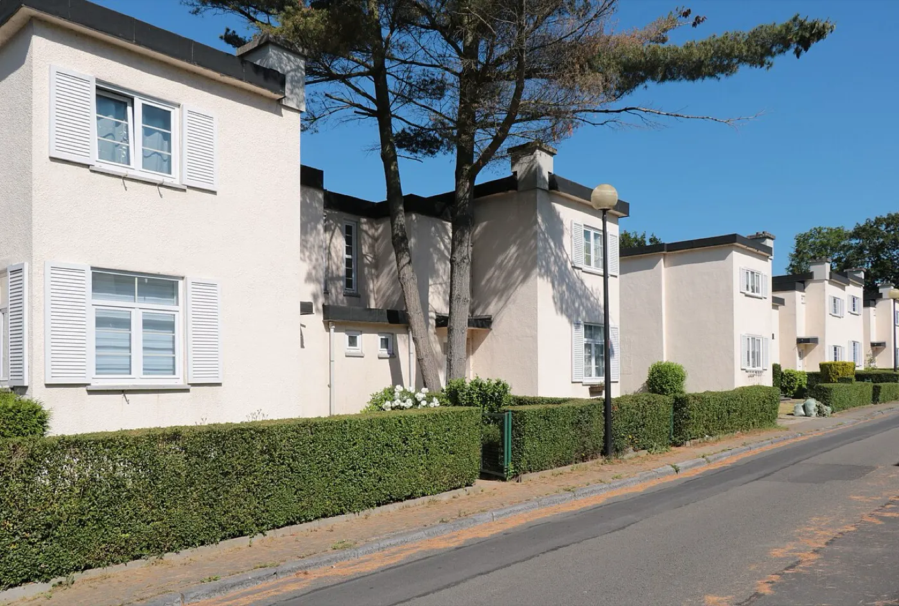
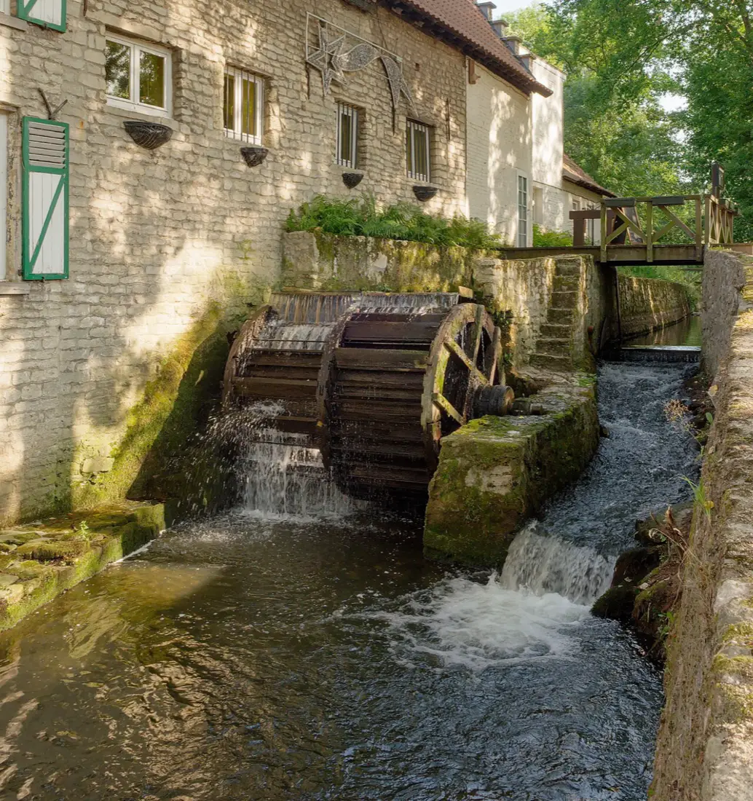
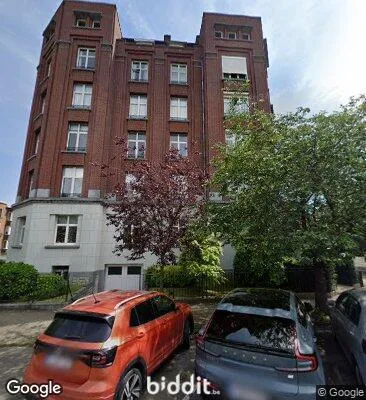
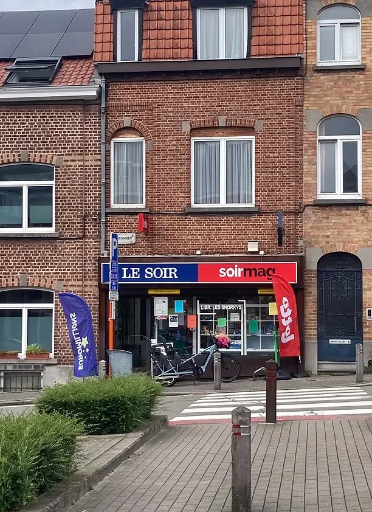

Maison ou appartement : un premier rendez-vous gratuit pour faire le point, puis une vente de A à Z pour 2 % HTVA, tout compris. Vous ne payez qu'en cas de vente.
Au 1er semestre 2026, le prix médian d'une maison à Woluwe-Saint-Lambert était de 660 000 €, pour 65 ventes (Statbel). Presque toutes sont des maisons mitoyennes ou semi-mitoyennes, à 2 ou 3 façades.
Pour fixer votre prix, nous partons des ventes comparables de votre rue et de votre quartier, de l'état de la maison et de son PEB. Le dossier vendeur (PEB, attestation du sol, renseignements urbanistiques) est prêt avant la mise en ligne.
Vendre ma maison →
Les appartements font l'essentiel du marché : 329 ventes au 1er semestre 2026, pour un prix médian de 348 750 €. La moitié de ces ventes se situe entre 269 000 € et 425 000 € (Statbel).
En copropriété, nous rassemblons les PV des 3 dernières assemblées générales, les décomptes de charges et le règlement de copropriété. Appartement loué ou libre : les visites s'organisent en accord avec le locataire.
Vendre mon appartement →Pas de frais de dossier, pas de supplément pour les photos ou les visites. La commission est calculée sur le prix de vente réel et n'est due qu'en cas de vente.
Exemple indicatif, montants hors TVA.
Visite du bien et prix de mise en vente basé sur les ventes comparables.
PEB, attestation du sol, urbanisme, copropriété.
Reportage professionnel, Immoweb et portails.
Sur 2 à 3 week-ends, avec retour après chaque visite.
Comparaison des offres, vous décidez.
Coordination avec le notaire, compromis et acte.
Woluwe-Saint-Lambert est l'une des communes les plus chères de Bruxelles : au 1er semestre 2026, le prix médian y dépassait d'environ 16 % celui de la Région pour les maisons, et d'environ 27 % pour les appartements (Statbel).
C'est avant tout un marché d'appartements : plus de 8 ventes sur 10. Sur un an, les prix sont stables pour les maisons (−0,8 %) et en légère hausse pour les appartements (+2,1 %). La commune réunit des quartiers très différents, de la cité-jardin du Kapelleveld à la vallée de la Woluwe, où se trouve le moulin Lindekemale.

Source : Statbel, prix de l'immobilier, ventes du 1er semestre 2026 comparées au 1er semestre 2025. Médiane : la moitié des biens s'est vendue plus cher, l'autre moitié moins cher.


2 % HTVA du prix de vente, tout compris, uniquement en cas de vente. Le premier rendez-vous est gratuit et sans engagement.
Vous n'avez pas à en chercher un : nous vous mettons en relation avec le nôtre, le notaire Stephan Borremans, qui suit le dossier du compromis jusqu'à l'acte pour faire avancer les choses. En Belgique, la vente se signe toujours chez un notaire, et vous restez libre de choisir le vôtre.
À titre indicatif, au 1er semestre 2026, le prix médian était de 660 000 € pour une maison et de 348 750 € pour un appartement (Statbel). Le prix de votre bien, nous le fixons avec vous lors du premier rendez-vous, à partir des ventes comparables du quartier, de son état et de son PEB.
Vous ne payez rien : la commission de 2 % HTVA n'est due qu'en cas de vente.
Le délai jusqu'au compromis dépend surtout du prix, du dossier et de la présentation du bien. Entre le compromis et l'acte, il faut compter au maximum 4 mois (notaire.be).
Certificat PEB, attestation du sol, renseignements urbanistiques et titre de propriété ; pour un appartement, aussi les PV des 3 dernières assemblées générales, les décomptes de charges et le règlement de copropriété. Nous vous aidons à les rassembler.
Oui. Le bail en cours est transmis à l'acheteur, et les visites sont organisées en accord avec le locataire.
Nous travaillons en français et en anglais. Pour le néerlandais, l'étude de notre notaire partenaire et notre bureau peuvent vous accompagner tout au long de la vente.
Premier rendez-vous gratuit et sans engagement. 2 % HTVA, tout compris.